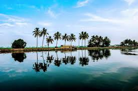

ALAPPUZHA
Alappuzha, also called Alleppey, city, southern Kerala state, southwestern India. It lies on a narrow land spit between the Arabian Sea and Vembanad Lake, south of Kochi (Cochin), and is on the main road between Kochi and Thiruvananthapuram